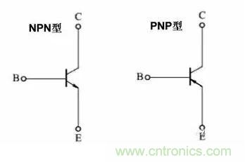
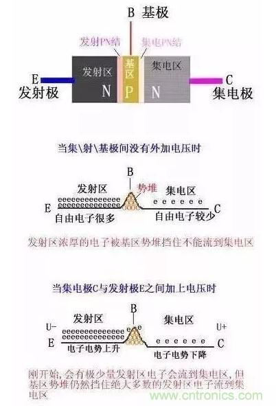
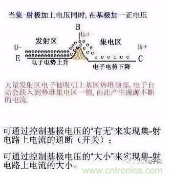
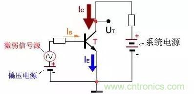
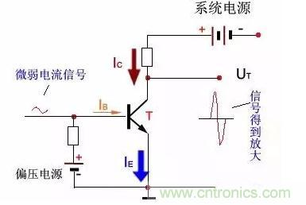
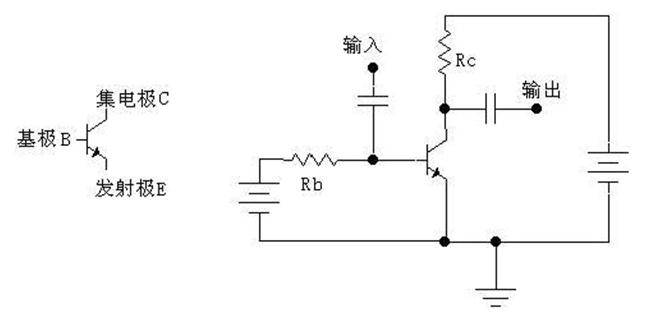
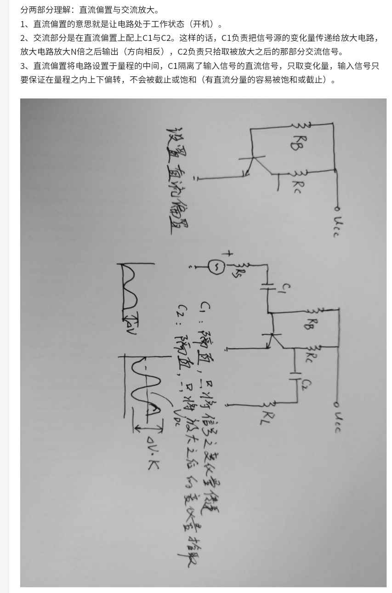

2020/08/08

三极管电流控制原理示意图


三极管基本电路
外加电压使发射结正向偏置，集电结反向偏置。

集/基/射电流关系：
IE = IB + IC
IC = β * IB
如果 IB = 0, 那么 IE = IC = 0
当IB=0时, IC→0 ,称为三极管处于截止状态，相当于开关断开;
当IB>0时, IB轻微的变化,会在IC上以几十甚至百多倍放大表现出来;
当IB很大时，IC变得很大，不能继续随IB的增大而增大，三极管失去放大功能，表现为开关导通。
三极管核心功能：
放大功能：小电流微量变化，在大电流上放大表现出来。
开关功能：以小电流控制大电流的通断。
三极管的放大功能
IC = β * IB （其中β≈ 10~400 ）
例：当基极通电流IB=50μA时，集极电流：
IC=βIB=120*50μA=6000μA
微弱变化的电信号通过三极管放大成波幅度很大的电信号，如下图所示：

所以，三极管放大的是信号波幅，三极管并不能放大系统的能量。
能放大多少？
哪要看三极管的放大倍数β值了！
首先β由三极管的材料和工艺结构决定：
如硅三极管β值常用范围为：30~200
锗三极管β值常用范围为：30~100
β值越大，漏电流越大，β值过大的三极管性能不稳定。
其次β会受信号频率和电流大小影响：
信号频率在某一范围内，β值接近一常数，当频率越过某一数值后，β值会明显减少。
β值随集电极电流IC的变化而变化，IC为mA级别时β值较小。一般地，小功率管的放大倍数比大功率管的大。
看得懂的三极管工作原理
对三极管放大作用的理解，切记一点：能量不会无缘无故的产生，所以，三极管一定不会产生能量，但三极管厉害的地方在于：它可以通过小电流控制大电流。放大的原理就在于：通过小的交流输入，控制大的静态直流。
假设三极管是个大坝，这个大坝奇怪的地方是，有两个阀门，一个大阀门，一个小阀门。小阀门可以用人力打开，大阀门很重，人力是打不开的，只能通过小阀门的水力打开。所以，平常的工作流程便是，每当放水的时候，人们就打开小阀门，很小的水流涓涓流出，这涓涓细流冲击大阀门的开关，大阀门随之打开，汹涌的江水滔滔流下。如果不停地改变小阀门开启的大小，那么大阀门也相应地不停改变，假若能严格地按比例改变，那么，完美的控制就完成了。
在这里，Ube 就是小水流，Uce 就是大水流，人就是输入信号。当然，如果把水流比为电流的话，会更确切，因为三极管毕竟是一个电流控制元件。
如果某一天，天气很旱，江水没有了，也就是大的水流那边是空的。管理员这时候打开了小阀门，尽管小阀门还是一如既往地冲击大阀门，并使之开启，但因为没有水流的存在，所以，并没有水流出来。这就是三极管中的截止区。饱和区是一样的，因为此时江水达到了很大很大的程度，管理员开的阀门大小已经没用了。如果不开阀门江水就自己冲开了，这就是二极管的击穿。
在模拟电路中，一般阀门是半开的，通过控制其开启大小来决定输出水流的大小。没有信号的时候，水流也会流，所以，不工作的时候，也会有功耗。而在数字电路中，阀门则处于开或是关两个状态。当不工作的时候，阀门是完全关闭的，没有功耗。
晶体三极管是一种电流控制元件。发射区与基区之间形成的 PN 结称为发射结，而集电区与基区形成的 PN 结称为集电结。晶体三极管按材料分常见的有两种：锗管和硅管。而每一种又有 NPN 和 PNP 两种结构形式，使用最多的是硅 NPN 和 PNP 两种，两者除了电源极性不同外，其工作原理都是相同的，三极管工作在放大区时，三极管发射结处于正偏而集电结处于反偏，集电极电流 Ic 受基极电流 Ib 的控制，Ic 的变化量与 Ib 变化量之比称作三极管的交流电流放大倍数 β（β=∆Ic/∆Ib，∆ 表示变化量。）在实际使用中常常利用三极管的电流放大作用，通过电阻转变为电压放大作用。
要判断三极管的工作状态必须了解三极管的输出特性曲线，输出特性曲线表示 Ic 随 Uce 的变化关系（以 Ib 为参数），从输出特性曲线可见，它分为三个区域：截止区、放大区和饱和区。
根据三极管发射结和集电结偏置情况，可以判别其工作状态：
1.对于 NPN 三极管，当 Ube≤0 时，三极管发射结处于反偏工作，则 Ib≈0，三极管工作在截止区；
2.当晶体三极管发射结处于正偏而集电结处于反偏工作时，三极管工作在放大区，Ic 随 Ib 近似作线性变化；
3.当发射结和集电结均处于正偏状态时，三极管工作在饱和区，Ic 基本上不随 Ib 而变化，失去了放大功能。
截止区和饱和区是三极管工作在开关状态的区域。那么各种状态 Ube Ubc Uce 有没有个固定的电压值呢？不同的材料，PN 结的势垒电压不一样，锗管约 0.3V，硅管约 0.7V，不同的制造工艺，不同的型号也有少量差别，但是基本是这个量级。要知道准确值，必须查看输入特性曲线（类似于二极管正向特性曲线）。三极管是电流放大器件，有三个极，分别叫做集电极 C，基极 B，发射极E。分成 NPN 和 PNP 两种。我们仅以 NPN 三极管的共发射极放大电路为例来说明一下三极管放大电路的基本原理。

下面的分析仅对于 NPN 型硅三极管。如上图所示，我们把从基极 B 流至发射极 E 的电流叫做基极电流 Ib；把从集电极 C 流至发射极 E 的电流叫做集电极电流 Ic。这两个电流的方向都是流出发射极的，所以发射极 E 上就用了一个箭头来表示电流的方向。三极管的放大作用就是：集电极电流受基极电流的控制（假设电源能够提供给集电极足够大的电流的话），并且基极电流很小的变化，会引起集电极电流很大的变化，且变化满足一定的比例关系：集电极电流的变化量是基极电流变化量的 β 倍，即电流变化被放大了 β 倍，所以我们把 β 叫做三极管的放大倍数（β 一般远大于 1，例如几十，几百）。如果我们将一个变化的小信号加到基极跟发射极之间，这就会引起基极电流 Ib 的变化，Ib 的变化被放大后，导致了 Ic 很大的变化。如果集电极电流 Ic 是流过一个电阻 R 的，那么根据电压计算公式 U=R*I 可以算得，这电阻上电压就会发生很大的变化。我们将这个电阻上的电压取出来，就得到了放大后的电压信号了。三极管在实际的放大电路中使用时，还需要加合适的偏置电路。这有几个原因。首先是由于三极管 BE 结的非线性（相当于一个二极管），基极电流必须在输入电压大到一定程度后才能产生（对于硅管，常取 0.7V）。当基极与发射极之间的电压小于 0.7V 时，基极电流就可以认为是 0。但实际中要放大的信号往往远比 0.7V 要小，如果不加偏置的话，这么小的信号就不足以引起基极电流的改变（因为小于 0.7V 时，基极电流都是 0）。
如果我们事先在三极管的基极上加上一个合适的电流（叫做偏置电流，上图中那个电阻 Rb 就是用来提供这个电流的，所以它被叫做基极偏置电阻），那么当一个小信号跟这个偏置电流叠加在一起时，小信号就会导致基极电流的变化，而基极电流的变化，就会被放大并在集电极上输出。另一个原因就是输出信号范围的要求，如果没有加偏置，那么只有对那些增加的信号放大，而对减小的信号无效（因为没有偏置时集电极电流为 0，不能再减小了）。而加上偏置，事先让集电极有一定的电流，当输入的基极电流变小时，集电极电流就可以减小；当输入的基极电流增大时，集电极电流就增大。这样减小的信号和增大的信号都可以被放大了。
下面说说三极管的饱和情况。像上面那样的图，因为受到电阻 Rc 的限制（Rc 是固定值，那么最大电流为 U/Rc，其中 U 为电源电压），集电极电流是不能无限增加下去的。当基极电流的增大，不能使集电极电流继续增大时，三极管就进入了饱和状态。一般判断三极管是否饱和的准则是：Ib*β〉Ic。进入饱和状态之后，三极管的集电极跟发射极之间的电压将很小，可以理解为一个开关闭合了。这样我们就可以拿三极管来当作开关使用：当基极电流为 0 时，三极管集电极电流为 0（这叫做三极管截止），相当于开关断开；当基极电流很大，以至于三极管饱和时，相当于开关闭合。如果三极管主要工作在截止和饱和状态，那么这样的三极管我们一般把它叫做开关管。
如果我们在上面这个图中，将电阻 Rc 换成一个灯泡，那么当基极电流为0 时，集电极电流为 0，灯泡灭。如果基极电流比较大时（大于流过灯泡的电流除以三极管的放大倍数 β），三极管就饱和，相当于开关闭合，灯泡就亮了。由于控制电流只需要比灯泡电流的 β 分之一大一点就行了，所以就可以用一个小电流来控制一个大电流的通断。如果基极电流从 0 慢慢增加，那么灯泡的亮度也会随着增加（在三极管未饱和之前）。
对于 PNP 型三极管，分析方法类似，不同的地方就是电流方向跟 NPN 的刚好相反，因此发射极上面那个箭头方向也反了过来——变成朝里的了。
三极管电容作用

共射共共集共基三种电路比较